10 部片单 · 恐怖 / 科幻 / 惊悚 / 悬疑 / 剧情
| # | 片名 | 类型 | 评分 / 状态 |
|---|---|---|---|
| 01 | 8号出口 | 悬疑 / 心理惊悚 / 恐怖 | 92% / 86% / 6.3 |
| 02 | 呼啸山庄 | 剧情 / 哥特 / 情欲惊悚 | 57% / 75% / 55 |
| 03 | 生化危机：爆发夜 | 恐怖 / 科幻 / 丧尸 | 未上映 / 3500 万美元+ / 52% |
| 04 | 复活她 | 恐怖 / 惊悚 / 剧情 | 89% / 79% / 75 |
| 05 | 弗兰肯斯坦 | 科幻 / 恐怖 / 哥特剧情 | 85% / 95% / 78 |
| 06 | 死亡竞走 | 惊悚 / 科幻 / 剧情 | 88% / 85% / 71 |
| 07 | 完美伴侣 | 科幻 / 惊悚 / 黑色喜剧 | 93% / 88% / 6.8 |
| 08 | 铁血战士：杀戮之地 | 科幻 / 动作 / 惊悚 | 86% / 95% / 7.5 |
| 09 | 异教徒 | 恐怖 / 惊悚 / 宗教悬疑 | 91% / 76% / 7.0 |
| 10 | 沙丘2 | 科幻 / 剧情 / 史诗 | 8.0 / 8.5 / 92% |
8号出口 Exit 8
规则只有一条：发现异常，立刻回头。
剧情梗概
一个男人被困在无限循环的地铁地下通道里——白墙、日光灯、指示牌，一模一样，看不到尽头。规则写在告示牌上：不要放过任何异常；如果发现异常，立刻原路返回；如果没有异常，继续往前；最终从「8 号出口」离开。而只要看漏一次，一切归零，他会重新站在那段走廊的起点。第 0 次、第 17 次、第 206 次……他不记得自己走了多久，直到他开始分不清异常到底在墙上，还是在他自己身上。
亮点
- 改编自 2023 年爆火的独立游戏《8 号出口》（KOTAKE CREATE 制作，全球下载数千万）。这是它第一次被改编成电影。
- 导演川村元气是《你的名字。》《铃芽之旅》《天气之子》的制片人，也是小说家（《如果世上不再有猫》）。《8 号出口》是他自编自导的第二部长片。
- 二宫和也几乎独挑大梁——全片绝大部分时间是他一个人在同一条走廊里走、回头、再走。小松菜奈友情出演。
- Neon 拿下北美版权，2026 年 4 月 10 日在 488 家影院开画，首周末 140 万美元、单馆 2800 美元，对日本真人片来说相当亮眼。日本本土票房突破 3000 万美元，是 2025 年日本真人片第三。
- 制作成本仅约 8 亿日元（约 530 万美元）；导演明确说这不是「游戏改编」，而是把游戏的「找不同」机制翻译成电影语言。
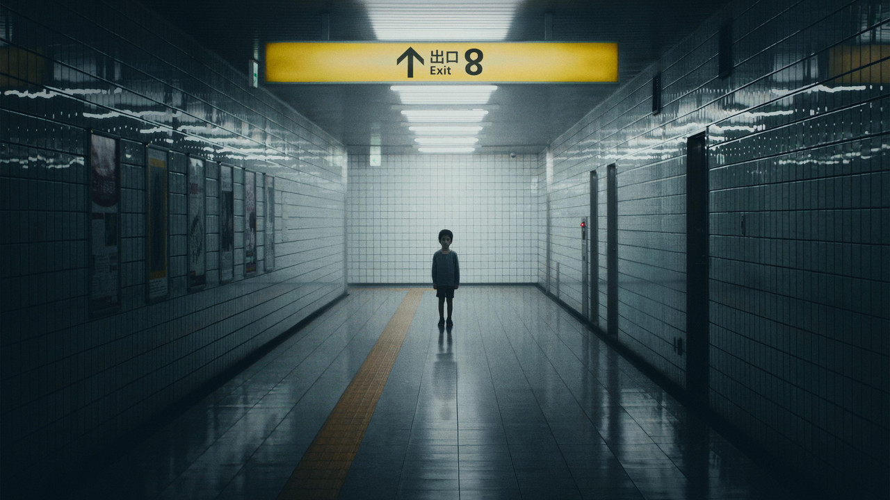
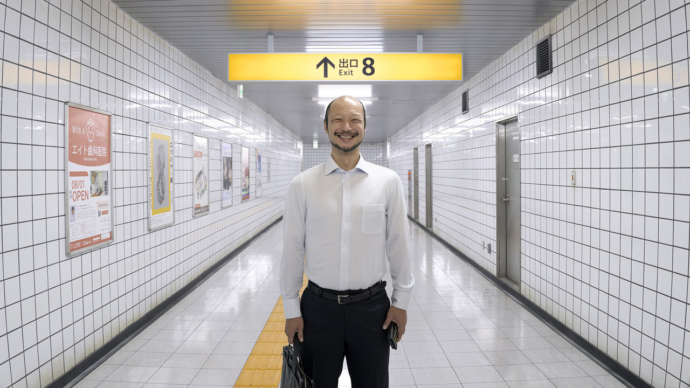
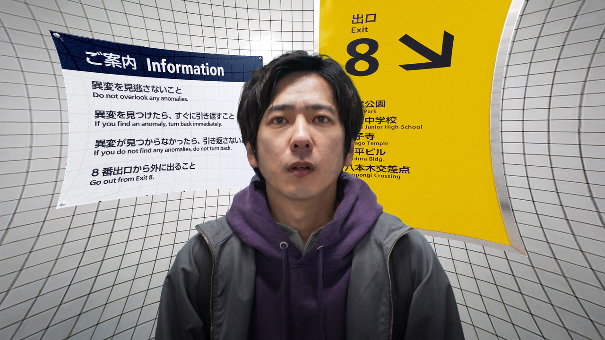
导演与主创 · 他们的历史作品
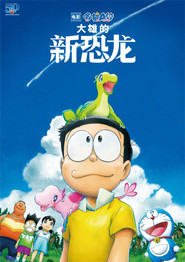
哆啦A梦：大雄的新恐龙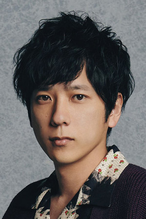
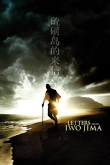
硫磺岛的来信短评（轻微剧透）
把「找不同」搬上银幕，最难的地方在于：游戏里的紧张感来自你自己盯着屏幕找，而电影没有交互，观众凭什么也跟着紧张？川村元气的解法是把镜头几乎焊死在二宫和也身后——你和他看到的东西一样多，也只能和他一样一次次从头再来。前 40 分钟那种「重复到想笑」的枯燥是完全故意的，它要你先体会到麻木，才会在后面每一次细微的错位里真的发毛。它真正想说的其实不是逃脱：这个男人在现实里有一件他一直不肯面对的事（我不说是哪一件），而那条走不出去的走廊，就是他给自己造的悔过室。所以结尾的转向不是「终于走对了」，而是「终于承认了」。缺点很明确：95 分钟里概念始终只有一个，中段的重复感会劝退一部分人，豆瓣 6.3 主要扣在这里；觉得它「撑不满」是完全合理的批评。但它在「怎么把一个没有故事的游戏拍成电影」这件事上给出的答案，比大多数游戏改编片诚实得多。
为什么值得一看
玩过《8 号出口》的人；喜欢《心慌方》《恐怖游轮》式循环结构的人；想看二宫和也一场几乎不间断的独角戏。重复感强、概念单一，追求情节推进的会难熬。内地暂无引进，HBO Max / Shudder 已上线。
呼啸山庄 Wuthering Heights
片名是带引号的——她没打算忠实，她打算让你难受。
剧情梗概
18 世纪约克郡荒原。弃儿希斯克利夫被恩肖家收养，与凯瑟琳一起在沼泽地里长大。那种亲密很快越过了兄妹的边界，变成一种吞噬一切的执念。凯瑟琳最终选择了门当户对、温和体面的埃德加·林顿——她说这是为了不辱没自己，也为了能救他。希斯克利夫听到了前半句。他消失数年，回来时带着钱和一身礼貌，然后花了余生把两个家族一起拖进废墟。
亮点
- 埃默拉尔德·芬内尔（《前程似锦的女孩》奥斯卡最佳原创剧本、《萨特本》）自编自导。玛格特·罗比饰凯瑟琳并任制片。
- 摄影莱纳斯·桑德格伦（《爱乐之城》《007：无暇赴死》），35mm + VistaVision 拍摄；取景约克郡实地，服装与布景走的是「奢华但不考据」的路线。
- 查莉·XCX 为影片写了整张原创专辑，首支单曲《House》先行发布——这是本片争议最大的元素之一。
- 雅各布·艾洛蒂饰希斯克利夫。他同年还凭《弗兰肯斯坦》里的造物拿下奥斯卡最佳男配角提名。
- 全球票房 2.42 亿美元，是 2026 年最大的院线事件之一；同时也是今年口碑最分裂的一部——《每日电讯报》五星，《独立报》一星。
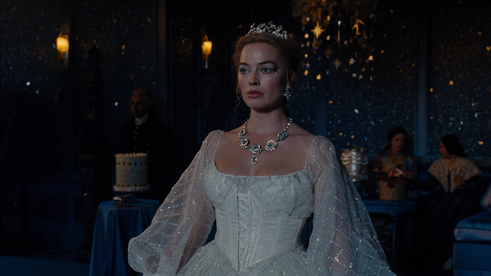
导演与主创 · 他们的历史作品
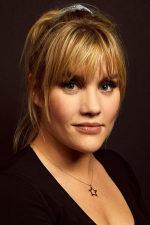
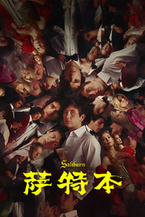
萨特本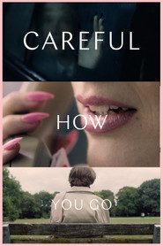
Careful How You Go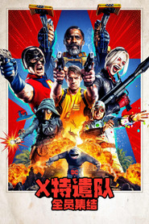
X特遣队：全员集结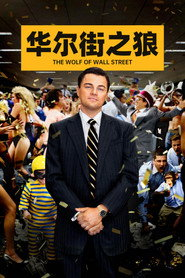
华尔街之狼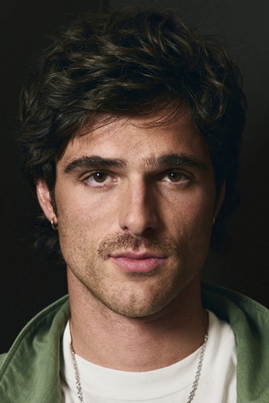
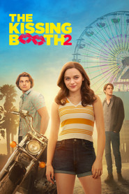
亲吻亭2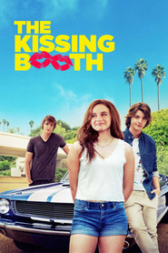
亲吻亭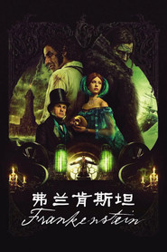
Frankenstein短评（轻微剧透）
芬内尔说得很清楚：她要重现的不是这本书，是「一个少女第一次读这本书时的生理反应」。这句话解释了所有的赞美和所有的愤怒。她基本把勃朗特的核心——阶级、继承权、暴力如何代际传递——掏空了，换成肉体、丝绸、不合时宜的流行歌和两个主角之间近乎窒息的欲望。喜欢的人叫它「大胆」，讨厌的人（《大西洋月刊》原话）叫它「性感的同人小说」。我站在中间偏前：它确实空洞，但空洞得很诚实，因为它从头到尾没装作文豪改编。真正让我留下来的不是那些场面，是艾洛蒂——他把希斯克利夫演成了一个「被拒绝之后决定毁掉一切」的人，而不是浪漫的受难者；他的恨是有行动力的，这让这个角色比大多数版本都危险。罗比则更狠：她的凯瑟琳清清楚楚知道自己选了什么、代价是什么，她不是受害者，她是做决定的人。至于那些让你坐立不安的设计（片名带引号、维多利亚时代里出现的东西），是故意的。如果你爱原著，进场前请先把书放下——不然会非常难受。
为什么值得一看
《萨特本》《前程似锦的女孩》的影迷；想看今年最具争议的院线片的人；对「文学改编可以走多远」这件事好奇的人。原著党慎入，它基本放弃了阶级主题。内地暂无引进消息，HBO Max 已上线。
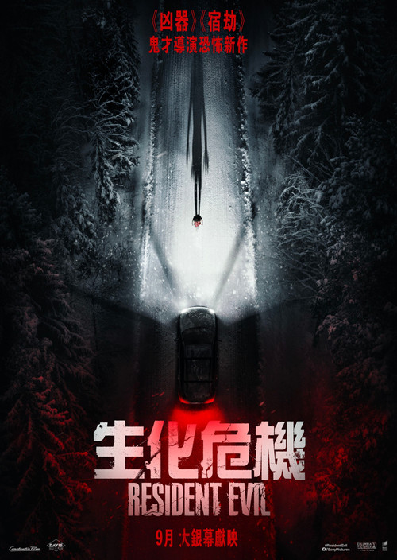
生化危机：爆发夜 Resident Evil
里昂不会出现。他说他不敢。
剧情梗概
布莱恩是一名医疗快递员，在一场暴雪里被派往浣熊市总医院送一个包裹。他不知道的是，这座城市正在经历一场爆发。雪地里、走廊上、电梯间，被感染的东西从四面围上来。他只有一夜，和一个还没送到的包裹。
亮点
- 导演扎克·克雷格（《野蛮人》《凶器》），与谢伊·哈滕共同编剧。他自称是这个系列的死忠玩家，项目从 2025 年 1 月官宣。
- 明确不改编任何一部游戏：故事与《生化危机 2》发生在「同一夜」，但讲的是边缘地带的另一个角色。全部主角都是新面孔——里昂、吉尔都不会出现。克雷格原话：「我不会重选里昂，上帝保佑。」
- 卡司：奥斯汀·艾布拉姆斯（《凶器》）、保罗·沃尔特·豪泽（《理查德·朱维尔的哀歌》，金球奖得主）、扎克·切里（《人生切割术》）、卡莉·瑞斯（《真探》第四季）。
- 2025 年 10 月在布拉格开机，周期极短；华纳、Netflix 等四家参与竞价，索尼/哥伦比亚最终拿下。
- 映前追踪：Quorum 显示认知度 51%、兴趣度 52%；Deadline 预测北美首周末 3500 万美元以上，若成真将打破系列纪录（原纪录《生化危机4：战神再生》2670 万）。
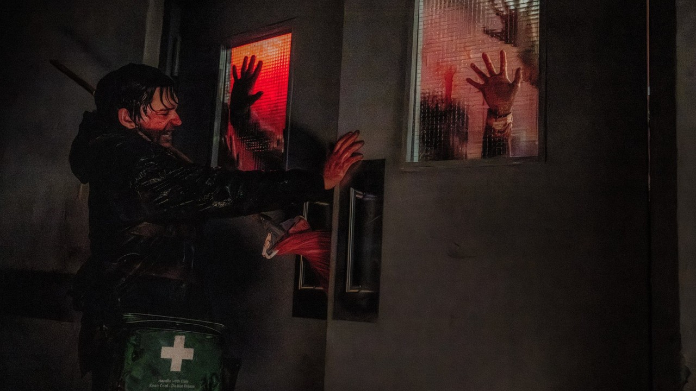
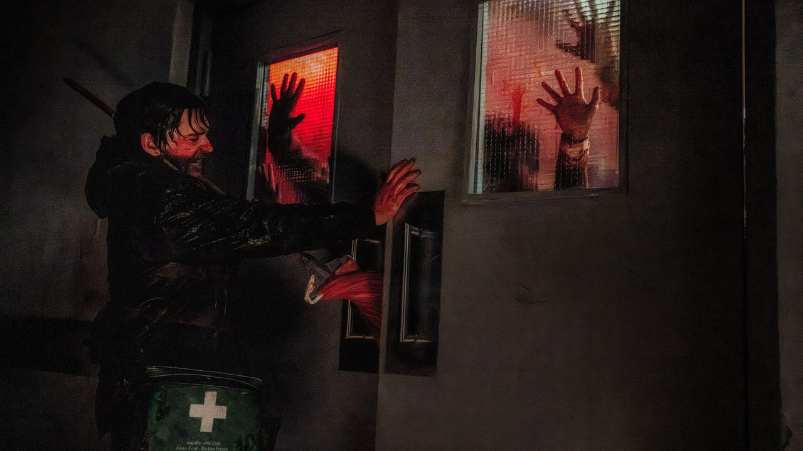
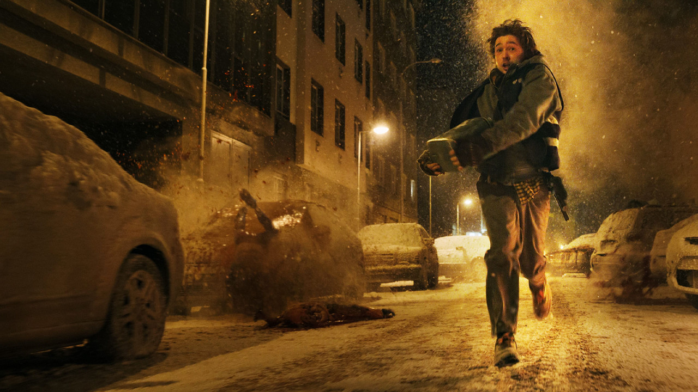
导演与主创 · 他们的历史作品
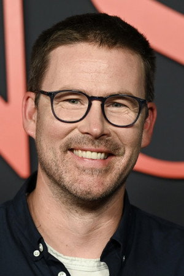
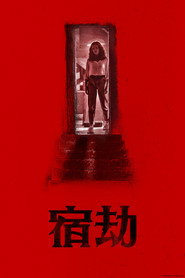
野蛮人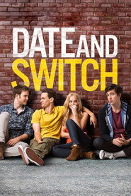
基哥们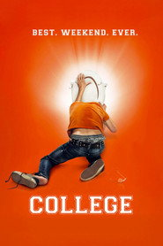
大学预备生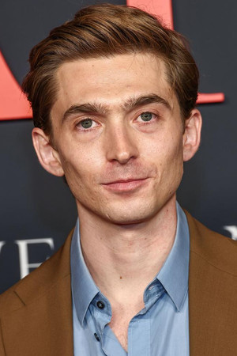
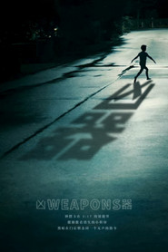
凶器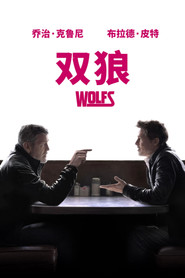
双狼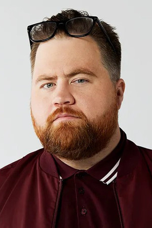
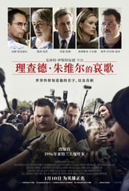
理查德·朱维尔的哀歌短评（轻微剧透）
这条只能算待看清单，不是已验证推荐，我把话说在前面。为什么依然值得占一个位置：克雷格是目前恐怖片里最会埋雷的导演之一——《野蛮人》那记地下室转折、《凶器》的多视角拼图，都证明他擅长在你以为看懂的地方把地面整个抽掉。而这个 IP 几十年来的问题从来不是「没人拍得好」，而是「没人愿意只拍一个晚上、一栋楼、一个人」：每一部都在急着铺满世界观、塞满彩蛋、给续集留口子。如果克雷格真的把力气压在一夜求生上，这会是系列第一次真正对味。风险同样清楚：他此前没碰过这个量级的 IP；原创故事 + 全新生面孔意味着游戏粉和路人都不好讨好；而且这个系列已经砸过两回了。我唯一比较有把握的判断是——他至少不会拍一部无聊的片子。9 月 18 日之后再补结论。
为什么值得一看
《野蛮人》《凶器》的影迷；生化危机游戏玩家（克雷格承诺埋了大量只有玩家才懂的梗，且不会打扰路人）；想在影院看一部真正吓人的大片的人。未上映、无评分，请当作待看清单而非推荐结论。
复活她 Bring Her Back
她对他们好得过分。而过分的那部分，你到最后才明白。
剧情梗概
父亲突然去世后，17 岁的安迪和几乎全盲的妹妹派珀被送到一处偏远的寄养家庭。寄养母亲劳拉热情得几乎有些用力过猛，家里还住着一个几乎不说话的男孩奥利弗。安迪一开始只想着撑到成年、拿到妹妹的监护权。直到他注意到：劳拉从来不谈自己死去的女儿；屋外那间上锁的棚子里有东西在动；而奥利弗有时候根本不像个孩子。
亮点
- 丹尼·菲利普与迈克尔·菲利普兄弟（《回应我》Talk to Me，A24 首作烂番茄 94%）的第二部长片，编剧丹尼·菲利普 + 比尔·辛兹曼。
- 莎莉·霍金斯（《水形物语》《蓝色茉莉》，两届奥斯卡提名）饰劳拉。这是影片的核心赌注——她要在一个「疯狂」的角色里保持能被理解。
- 成本约 1500 万美元，全球票房 3940 万；全片基本只用一栋房子、四个主要角色，靠表演与声音推进。
- 2025 年 5 月 30 日北美公映，HBO Max 已上线。烂番茄「认证新鲜」。
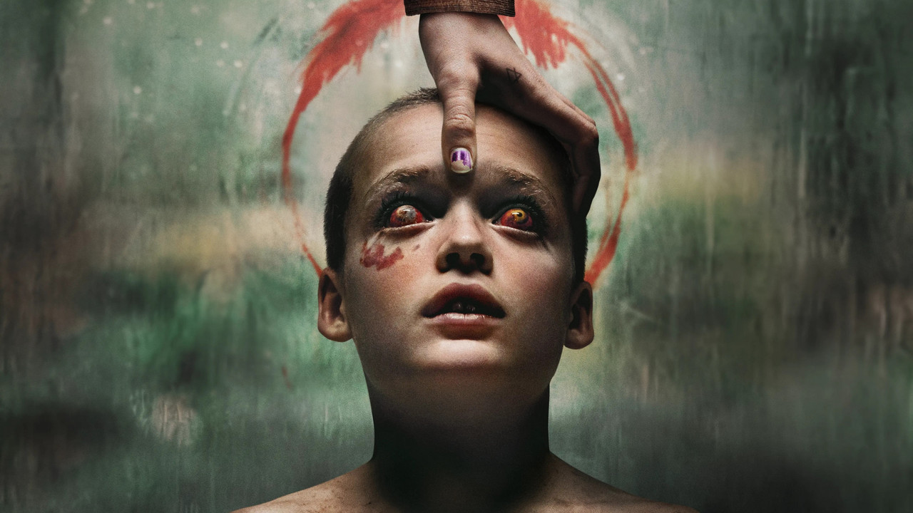
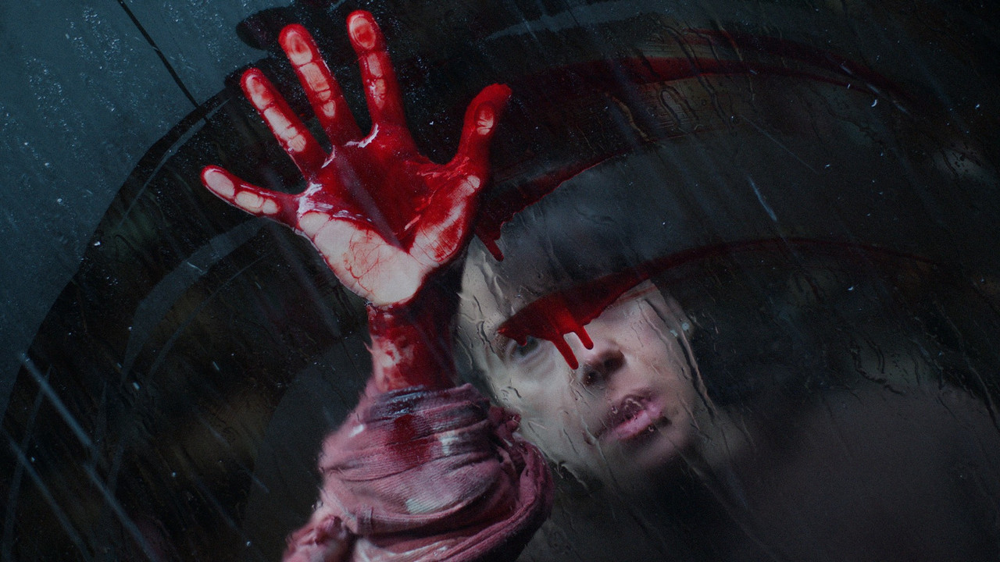
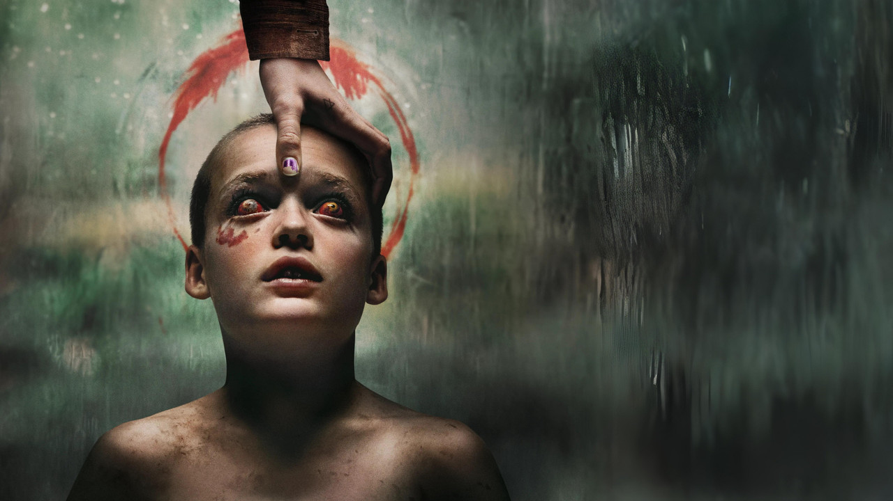
导演与主创 · 他们的历史作品
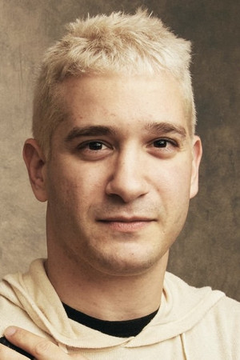
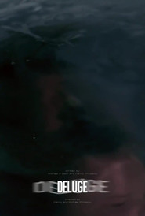
Deluge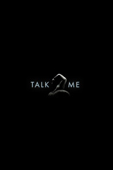
Talk 2 Me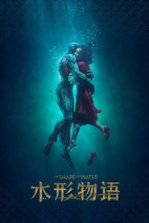
水形物语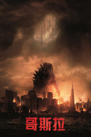
哥斯拉短评（轻微剧透）
菲利普兄弟这次把招魂那套机制压到了最低，他们真正想写的还是 grief——《回应我》里是青少年用通灵板填补空洞，这次换成了一个母亲。莎莉·霍金斯最厉害的地方在于她从不演「疯子」：劳拉的每一步在她自己的逻辑里都完全成立，你会理解她，然后立刻为自己理解她而恶心。奥利弗（乔纳·雷恩·菲利普斯）是全片最恐怖的设计——一个几乎不说话的孩子，你从头到尾搞不清他是受害者还是别的什么，而当他做那件事的时候，影院里是真的会有人叫出声。中段雨里那场戏和后段那场，尺度都相当凶，我劝你别在吃完饭之后看。它的问题和《回应我》一脉相承：情绪的表达方式太直白，最后 20 分钟几乎是在靠暴力强度往上推，主题的复杂度跟不上执行的狠度。但「悲伤能让人做出多可怕的事」这个提问，它问得比绝大多数恐怖片认真——而且它真的敢把答案拍出来。
为什么值得一看
《回应我》的影迷；人体恐怖 / 邪典恐怖的爱好者；能接受「越看越难受」的观众。自残与暴力场面强度很高，心理承受力差的请避开。
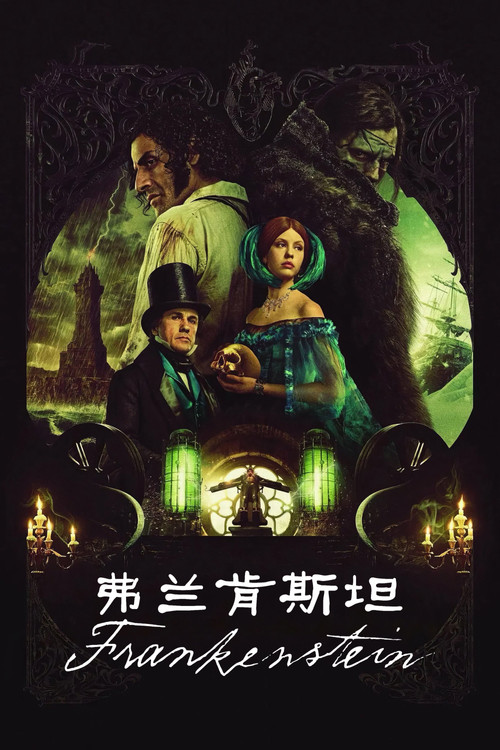
弗兰肯斯坦 Frankenstein
他造出了它，然后先逃走的那个是他。
剧情梗概
19 世纪。维克多·弗兰肯斯坦男爵（奥斯卡·伊萨克）靠着一位军火商（克里斯托弗·瓦尔兹）的资助，用尸块与电击造出了一个生命。通电的那一刻他成功了，也立刻被自己造出的东西吓坏了——他抛弃了它，任其在荒野里活下来。那个造物（雅各布·艾洛蒂）学会了站立、学会了语言，也学会了问那个唯一重要的问题：你为什么造我？
亮点
- 吉尔莫·德尔·托罗筹备数十年的执念项目，Netflix 投资约 1.2 亿美元，是他仅次于《环太平洋》的第二贵作品。
- 雅各布·艾洛蒂凭造物一角获奥斯卡最佳男配角提名；米娅·高斯饰伊丽莎白，克里斯托弗·瓦尔兹饰哈兰德，拉斯·米科尔森饰船长。
- 2025 年 11 月 7 日上线 Netflix，当日登顶全球电影榜第一；此前 10 月 17 日在北美做限定院线放映（含 35mm 与 IMAX 场次）。
- Criterion 将于 2026 年 10 月 27 日发行实体版，内含 158 分钟的导演剪辑版《Frankenstein: The Reborn Cut》。
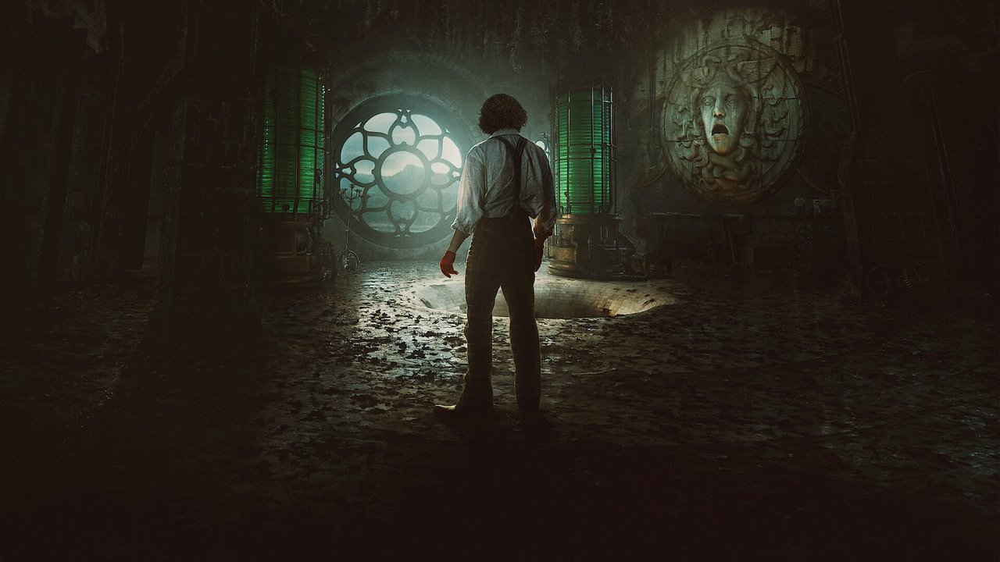
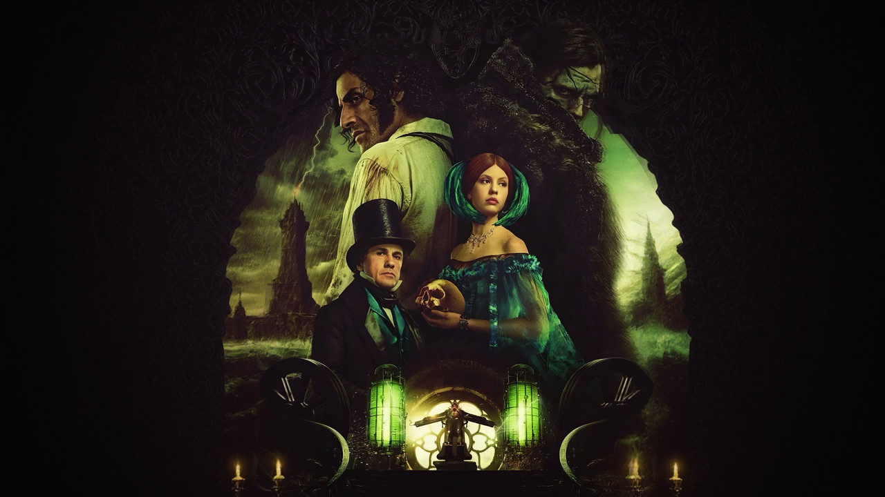
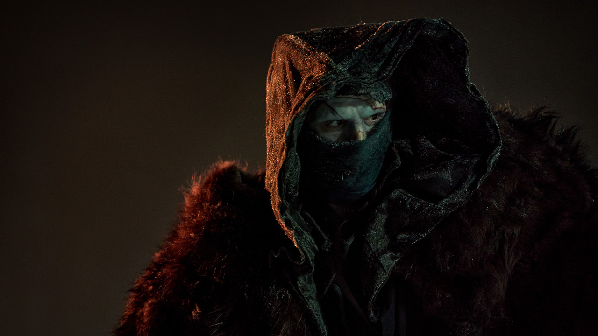
导演与主创 · 他们的历史作品
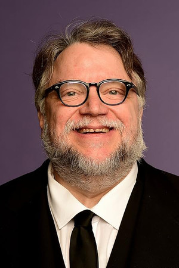
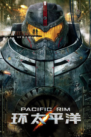
环太平洋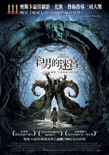
潘神的迷宫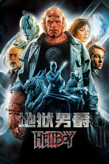
地狱男爵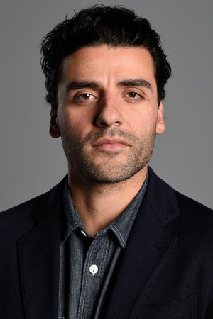
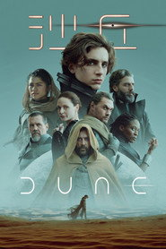
沙丘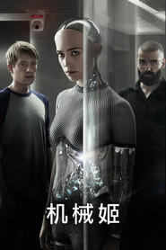
机械姬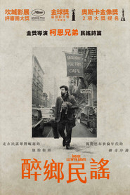
醉乡民谣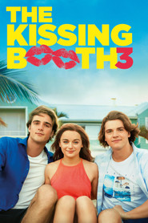
亲吻亭3短评（轻微剧透）
德尔·托罗一生都在拍同一件事——怪物比造他的人更像人。这次他终于拍到了源头。本片最聪明的结构决定是把叙事重心整个交给造物：维克多的段落是狂热、自负与懦弱，无聊而可鄙；造物的段落才是电影，而且片子自己知道。艾洛蒂的表演是近两年最让我意外的收获——他得在一具几乎全是假体的身体里，演出一个刚学会「我」这个字的人如何从愤怒走到哀求，而情绪只能靠声音、姿态和一双眼睛完成。德尔·托罗把「谁才是怪物」这个已经被讲烂的问题拍得毫不新鲜，却拍得极其真诚：他干脆把所有力气都花在质感上——雪原、城堡、解剖台、缝线、每一次呼吸。缺点也确实存在：149 分钟偏长，中段有一段时间在原地打转；《卫报》批评它「过于精致的维多利亚美学反而消毒了原著的粗粝」，这个批评是对的；《综艺》说它「最终被自己的史诗体量压垮」，也不算冤枉。但结尾那场在冰原上的戏，值回前面所有的冗长。
为什么值得一看
德尔·托罗的影迷（《水形物语》《潘神的迷宫》《猩红山峰》）；哥特恐怖与古典文学改编的观众；想看一次真正「把怪物当人写」的版本的人。节奏慢、片长长，追求紧凑刺激的会疲。Netflix 已上线。
死亡竞走 The Long Walk
三次警告。第三次的时候，他们还在一起聊天。
剧情梗概
一个架空的美国，每年举办一次「长途竞走」：50 名少年报名参赛，规则只有一条——保持每小时三英里以上。低于速度会拿到一次警告，一小时内累计三次警告，就地枪决。没有终点线，走到只剩一个人为止。最后活下来的那个可以得到一笔钱，和一个任何愿望。于是他们一边走，一边结交朋友，一边一个接一个倒下。
亮点
- 改编自斯蒂芬·金 1979 年以笔名「理查德·巴赫曼」发表的同名小说——这是他最早写成的长篇之一，写于大学时期。
- 导演弗朗西斯·劳伦斯（《饥饿游戏》后三部、《我是传奇》），编剧 JT·莫尔纳；全片按时间顺序拍摄，2024 年夏在温尼伯完成。
- 库珀·霍夫曼（菲利普·塞默·霍夫曼之子，《甘草比萨》）与大卫·荣松（《异形：夺命舰》，英国电影学院奖新星奖）的表演被一致点名；马克·哈米尔饰那个始终微笑的「少校」。
- 北美票房 3510 万、全球 6300 万美元（成本 2000 万），靠长线口碑回本；制片人罗伊·李说它「十年后会被当成经典」。Prime Video 已上线。
导演与主创 · 他们的历史作品

 分手有缘人
分手有缘人 废人
废人 上帝的间谍
上帝的间谍短评（轻微剧透）
这是斯蒂芬·金被改编得最好的一次之一，原因恰恰是它没有试图超出那个设定：一条路、一群男孩、一个规则。劳伦斯很聪明地把镜头几乎全程贴在地面上——他不拍围观的人群，不拍电视转播，不拍体制长什么样，只拍这几十双脚、汗、水泡和对话。于是「他们为什么还要继续走」成了唯一的问题，而答案随着人数一个个减少慢慢浮出来：不是因为想赢，是因为一旦停下，就等于承认前面死掉的那些人白死了。霍夫曼和荣松的组合是它最值钱的东西——一个天真到近乎固执，一个清醒到近乎残酷，两人走到最后那种「我知道我们只有一个能活着走出去，但我还是想跟你说话」的关系，比任何反乌托邦宣言都有力。缺点也直接：结尾的处理确实弱了，包括我在内不少观众觉得最后那几步配不上前面 100 分钟；中段有一段节奏重复；《纽约时报》说它「出奇地静止」，不算冤枉。但在一个被算法喂大的时代，还有商业片愿意把镜头钉在同一条土路上拍 108 分钟，本身就很罕见。
为什么值得一看
斯蒂芬·金的书迷；《饥饿游戏》《大逃杀》那一路的观众；想看一部靠对话和表演撑起来的惊悚片的人。暴力非常直接（死亡场面几乎不加掩饰），别带孩子看。
完美伴侣 Companion
第一幕是精心设计的骗局。别让人剧透。
剧情梗概
艾瑞丝和乔什开车去湖边别墅过周末，同行的还有另外两对情侣，以及别墅的主人谢尔盖。第一幕里的艾瑞丝紧张、讨好、拼命想被喜欢——她会为了一句玩笑道歉，会在厨房里努力融入。然后事情在第一幕结束前就出了大问题。艾瑞丝发现，自己身上有一个她从来不知道的开关。
亮点
- 德鲁·汉考克的导演处女作；制片人是《野蛮人》的扎克·克雷格——他原本打算自己导，看过剧本后把这个位置让给了汉考克。
- 苏菲·撒切尔（《黄蜂》《异教徒》）与杰克·奎德（《黑袍纠察队》《惊声尖叫》）主演，配角包括卢卡斯·盖奇、梅根·苏莉、哈维·吉兰、鲁珀特·弗兰德。
- 宣发刻意隐瞒类型：预告按浪漫喜剧剪，很多人进影院才发现是什么。首周末 930 万美元，仅次于《神探狗狗》；成本 1000 万，全球 3670 万。
- 97 分钟、基本一个主场景；片尾字幕明确写着「本片制作过程中未使用任何生成式 AI」。
导演与主创 · 他们的历史作品
 饥饿游戏
饥饿游戏 惊声尖叫5
惊声尖叫5短评（轻微剧透）
人工智能题材这两年已经被拍滥了，《完美伴侣》做对的是一件事：它不问「机器有没有灵魂」，它问「什么样的人会买一台」。这个转向让一部本该是《机械姬》模仿作的片子长出了自己的牙。第一幕是一场精心设计的骗局——撒切尔把艾瑞丝演得讨好到让人不适，而当真相揭开，你回头看每一句「亲爱的」，全都变成了控制指令。奎德是选角上的妙招：他在《黑袍纠察队》和《惊声尖叫》里攒下的「人畜无害」形象，恰好是乔什需要的伪装，那股理直气壮的 entitlement 是一点点渗出来的，而不是突然翻脸。汉考克的第一部长片控制得很好：97 分钟、一个场景、毫不拖沓，喜剧与惊悚的切换比想象中稳。缺点也清楚：主题并不深，几条支线（尤其卢卡斯·盖奇那条）纯属工具人，第三幕收得有点急，豆瓣 6.8 基本反映的是「好看但不耐嚼」。另外提醒一句：别先看任何解析再进场，第一幕的误读是它最值钱的东西，而且一旦被剧透就永久失效。
为什么值得一看
《机械姬》《梅根》《黑镜》的观众；索菲·撒切尔的影迷；想看一部聪明、短、不拖的科幻惊悚片的人。R 级，有几处突发暴力；进场前请避开所有剧情解析。HBO Max 已上线。
铁血战士：杀戮之地 Predator: Badlands
第一次，猎人不是反派，是那个被家族扔掉的孩子。
剧情梗概
在信奉「不做猎物、不交朋友、猎杀一切」的优加特部族里，年轻的德克因为体格弱小被视为家族耻辱。父亲下令兄长奎处决他，奎却在最后一刻选择救他，把他流放到被称为「死亡之星」的盖纳星。在那里德克遇到了只剩半截身体、却喋喋不休的仿生人希雅——她是维兰德-汤谷公司造的。两人各怀目的结伴上路，去猎杀那头连顶级猎手都闻风丧胆的巨兽蚀煞。然后德克发现，自己可能才是那个被猎的。
亮点
- 系列诞生近 40 年来第一次以铁血战士为主角。导演丹·特拉亨伯格（《科洛弗道10号》《铁血战士：狩猎》Prey，RT 94%）回归。
- 艾丽·范宁一人分饰两角：乐观话痨的仿生人希雅，与冷酷高效的泰莎。她同年凭《情感价值》获奥斯卡最佳女配角提名。
- 与《异形》宇宙正式接轨——希雅是维兰德-汤谷公司制造的仿生人，这是两个 IP 第一次在正片里打通。
- 内地 2025 年 11 月 7 日与北美同步上映，首周 5254 万元拿下周冠；北美首周 4000 万美元，创系列 40 年最高开画纪录；CinemaScore A- 也是系列首次。
- 导演称灵感部分来自《汪达与巨像》《波斯王子》《兄弟：双子传说》等游戏，镜头运动刻意模仿玩家视角。
导演与主创 · 他们的历史作品
短评（轻微剧透）
特拉亨伯格做了这个系列四十年来最冒险的一件事：让猎人当主角，然后问他「你凭什么觉得你是猎人」。德克不是英雄，他是部族里的残次品——因为不够强壮被判死刑，被哥哥偷偷流放。这个起点把整部片从「人类怎么活下来」改写成了「一个被自己的文化抛弃的人，怎么重新定义强大」。盖纳星拍得很美：特拉亨伯格走的是自然主义，每一株植物都像在呼吸，每一只生物同时具备诗意与杀意，和卡梅隆那种会发光的潘多拉完全是两条路。希雅是真正的惊喜——范宁演一个只剩半截身体还喋喋不休的仿生人，既不煽情也不卖萌，她和德克之间那场关于「头狼不是最凶的那只，是最会保护同伴的那只」的对话，在一部铁血战士电影里显得格外不合时宜，也格外动人。德克与希雅之间从头到尾没有一丝多余的煽情，这在今天的商业片里几乎是一种自律。缺点：第三幕落回大场面，略显套路；PG-13 让一些老粉丝觉得不够狠（没有剥皮、没有血浆喷射）。但作为一次结构性跃迁，它比《狩猎》更彻底，也更好看。
为什么值得一看
《铁血战士：狩猎》/《科洛弗道10号》的影迷；想在影院看一部节奏紧凑的科幻动作片的人；对「怪物视角」叙事感兴趣的人。内地院线已下线，Hulu / Disney+ 已上线，国内平台可租看。
异教徒 Heretic
他只是想跟她们聊聊信仰。门已经关上了。
剧情梗概
两名摩门教女传教士在寒冷的一天里挨家挨户敲门。她们敲开里德先生（休·格兰特）的门时，他彬彬有礼地说妻子在厨房烤蓝莓派，请她们进来等。门在她们身后关上。里德先生想跟她们聊聊信仰——更准确地说，他想向她们证明：她们信的那个东西，和她们教会之前出现过的所有东西一样，都是人编的。他准备了一套演示。演示需要她们做选择。
亮点
- 编剧/导演是《寂静之地》的斯科特·贝克与布莱恩·伍兹；A24 出品，成本不到 1000 万美元，全球票房 5920 万。
- 休·格兰特凭里德先生一角获第 82 届金球奖音乐/喜剧类最佳男主角提名。他此前公开表示「厌倦了被定型」，两位导演正是看到那篇采访才为他写了这个角色。
- 两位年轻演员索菲·撒切尔与克洛伊·伊斯特都在摩门教家庭长大，剧本创作和拍摄期间提供了大量一手意见。
- 全片基本一个场景、四个主要演员，按时间顺序拍摄；片尾字幕明确写着「本片未使用任何生成式 AI」。
- 两位导演说灵感来自《风的传人》(1960) 与《超时空接触》(1997)——两部都认真讨论信仰，却用通俗片的外壳。
导演与主创 · 他们的历史作品
短评（轻微剧透）
贝克和伍兹给自己定的标准很高：像《风的传人》和《超时空接触》那样严肃地谈宗教，但装在爆米花片里。前 70 分钟他们几乎做到了。里德先生不是传统意义上的反派，他是个体面、健谈、看起来真的在「启蒙」你的怀疑论者，而抛出来的问题也确实锋利——当所有宗教都在互相抄袭，你凭什么相信自己抽中的那一张？休·格兰特的表演是近年最好的转型之一：他不用任何恐怖片技巧，就靠一件棕色毛衣、一副礼貌的笑容和语速变化，把一个自认为在拯救别人的人演得让人发毛。撒切尔是另一个支点，巴恩斯修女从坚定到动摇的整个过程几乎全写在脸上。缺点也很实在：第三幕从「思辨」滑向了「血浆」，很多影评（包括《视与听》）认为它放弃了自己最好的部分，换成了廉价的机关与惊吓；CinemaScore 只给了 C+，说明普通观众对那个结局相当不满。我同意前半段远好过后半段——但前半段好到值得你为了它坐满 111 分钟。
为什么值得一看
《寂静之地》的影迷；喜欢「一个房间、四个人、全靠台词」式密闭惊悚的人；休·格兰特的影迷（这是他这些年最有意思的角色）。后段有血腥与暴力；宗教题材敏感者留意。
沙丘2 Dune: Part Two
他知道预言是假的。他还是决定演下去。
剧情梗概
厄崔迪家族在厄拉科斯覆灭之后，保罗和母亲杰西卡逃入沙漠，被弗雷曼人收留。保罗学会了在沙虫背上站立，学会了喝死亡之水，也学会了契妮口中那个词——救世主。问题在于：这个词不是弗雷曼人自己的，是姐妹会几百年前提前埋进来的。保罗看得见未来，也看得见「圣战」会以他的名义杀掉六百亿人。他知道预言是假的，也知道如果他不扮演它，弗雷曼人就不会站起来，契妮就会死，父亲的名字就会烂在沙子里。
亮点
- 丹尼斯·维伦纽瓦自编自导，改编自弗兰克·赫伯特 1965 年的小说，是《沙丘》(2021) 的直接下半部。
- 第 97 届奥斯卡 5 项提名（最佳影片、摄影、视觉效果、音效、服装设计），最终拿下最佳音效与最佳视觉效果。
- 摄影格雷格·弗莱瑟，配乐汉斯·季默；大量约旦与阿布扎比沙漠实景拍摄，黑白红外摄影拍厄拉奇恩的段落。
- 新增卡司：奥斯汀·巴特勒饰菲德-罗萨、弗洛伦斯·皮尤饰伊勒琅公主、克里斯托弗·沃肯饰皇帝、蕾雅·赛杜饰玛戈夫人。
导演与主创 · 他们的历史作品
 兰开斯特之王
兰开斯特之王短评（轻微剧透）
维伦纽瓦这一部把第一部留下的所有伏笔都磨成了刀。第一部讲「命运降临在一个年轻人身上」，第二部问的是：如果他早就知道那是个陷阱呢？保罗不是被推着走的——他是清醒地选择了扮演救世主，因为他看见只有这条路能让自己活下来、让契妮活下来、让父亲的名字被记住。这个选择把整部片从太空歌剧翻成了一部关于「被制造的弥赛亚」的政治悲剧：圣战不是失控的后果，圣战是计划的一部分。维伦纽瓦很克制地没有给保罗任何英雄时刻，反而让他越接近神位，越显得可怖。奥斯汀·巴特勒的菲德-罗萨是神来之笔——黑白沙漠里那场决斗被拍得像角斗仪式，也像一场婚礼。技术上无可挑剔：弗莱瑟把沙漠拍出了颗粒感而不是滤镜，季默这次终于不再抢戏。缺点：没看过第一部会有点难进；皇帝、姐妹会几条线被压得很薄；如果你本来就警惕「白人救世主」叙事，这部片会确认你所有的担心——而这恰恰是它想让你担心的。
为什么值得一看
看过《沙丘》(2021) 的观众（强烈建议按顺序看）；想在大银幕上看一部真正的科幻史诗的人；对「预言如何被制造」这个话题感兴趣的人。166 分钟、节奏沉稳，不适合当爆米花看。内地院线已下线，主流平台可看。